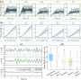
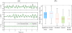

Anchor-only prediction
Stable and interpretable, but it misses transient dynamics and can settle toward an inaccurate shape.
A steady-state anchored residual predictor for long-horizon continuum and soft robot motion prediction under actuation shift.
Problem
Continuum robots are compliant, high-dimensional, and difficult to predict over many open-loop steps. Under shifted actuation, small one-step errors can accumulate into steady-response bias, distorted distal shape, and unstable rollouts.
Stable and interpretable, but it misses transient dynamics and can settle toward an inaccurate shape.
Captures transient motion, but recursive use can drift under stronger or faster actuation.
Uses an equilibrium reference for stability and a compact residual for dynamic mismatch.
Method
The model learns the input-conditioned steady response from static equilibrium data, then trains the residual on anchored dynamic transitions so training and rollout states are aligned.


Continuum Arm
The main benchmark uses a tendon-driven 3D continuum arm. The state stores sampled backbone geometry, while the command contains three tendon displacements. Held-out test trajectories use actuation outside the training regime.

Results
The largest gains occur near the distal backbone and later in the rollout, where drift is most visible. The hybrid predictor remains close to ground truth without giving up transient correction.
Position error reduction relative to the equilibrium-only anchor.
Distal position improvement over long open-loop test rollouts.
Six-second recursive prediction horizon used in the continuum-arm evaluation.


Beyond The Main Simulator
The paper also evaluates the same anchored residual idea on a soft-tail hardware setup under pump-frequency shift and on nonlinear benchmarks where catastrophic divergence is a key failure mode.
Minimum RMSE reduction across shifted-frequency soft-tail tests.
Minimum RMSE reduction against the residual-only soft-tail predictor.
The anchored model avoids catastrophic rollouts in the reported sweep.


Research Artifact
The artifact is organized for reproducing the continuum-arm experiments: source code, canonical datasets, scripts, and small summaries that document the reported comparisons.
Video
The supplementary video presents the continuum-arm rollouts and additional validation experiments.
Citation
BibTeX entry for the RSS 2026 paper.
@inproceedings{tanveer2026stabilizing,
title={Stabilizing 3D Continuum-Arm Rollouts via Equilibrium Anchoring and Feature-Lifted Residual Learning},
author={Tanveer, Ahsan and Afridi, Rahdar Hussain and Afridi, Waqar Hussain and Zhang, Feitian and Xie, Guangming},
booktitle={Robotics: Science and Systems},
year={2026}
}